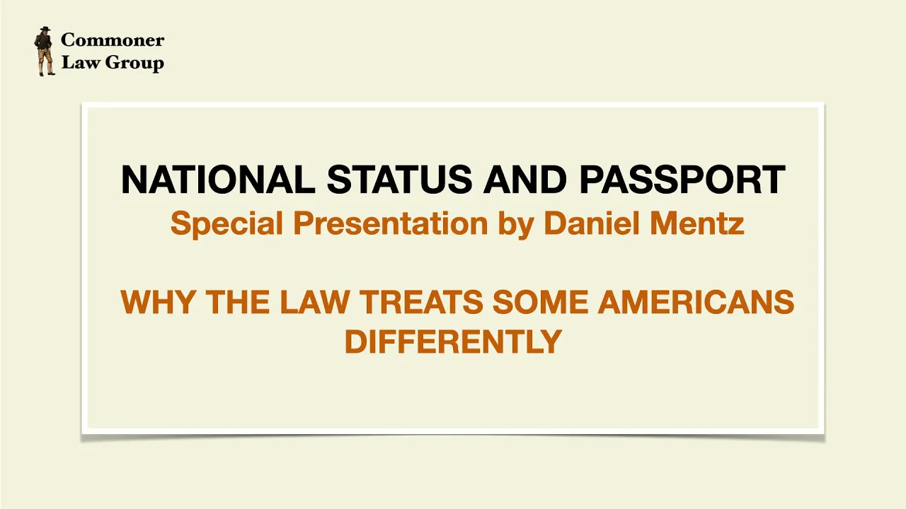
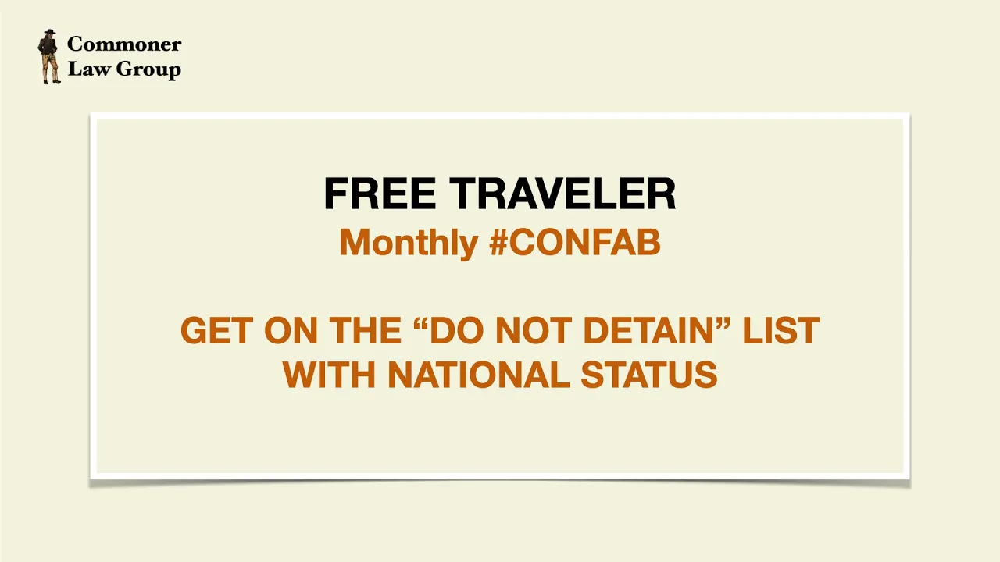
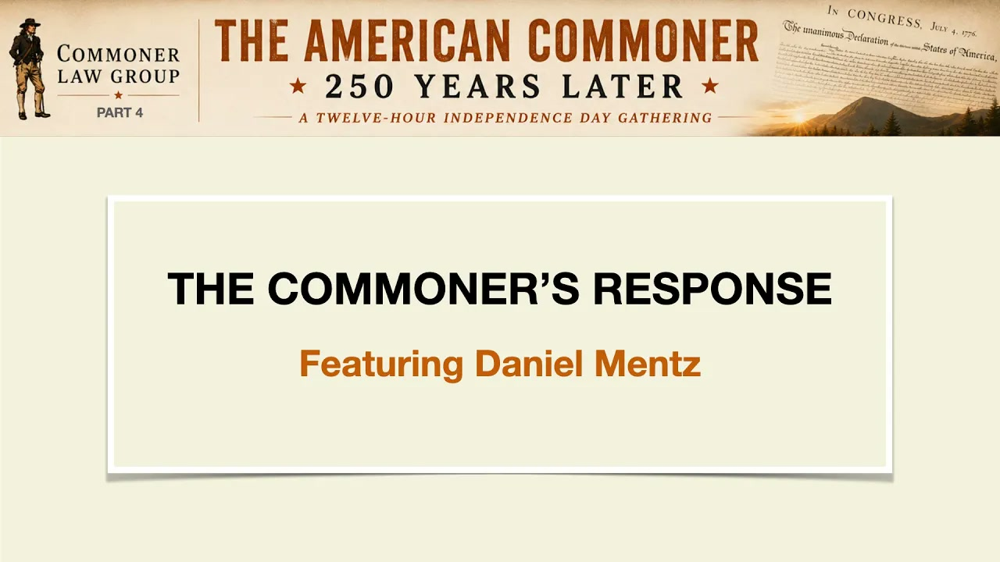

Detailed, slide-illustrated summaries of three Commoner Law Group programs featuring Daniel Mentz of the Sacred Honor Educational Fellowship. Each page links the video, full transcript and extracted slides.

The full presentation: the case-law opening, dialectics, the statutory definition of a "national," the 14th Amendment, Title 26, benefits and drawbacks, real-life exhibits, and Q&A. 32 slides.

Free Traveler Monthly Confab: licences as contracts, the ticket as a commercial instrument, a roadside question script, role-play, audience experiences, and equity as a remedy. 6 slides.

Independence Day segment on solutions: four strategic pathways (stay and fix, exit and build, withdraw consent, hold power accountable), Exit & Build, and Clint Griess's jury-principle excerpt. 18 slides.
These pages summarise what the speakers say and show. Legal and historical claims are the speakers' own and were not independently verified; each summary ends with points worth checking. Not legal advice. Project policies.